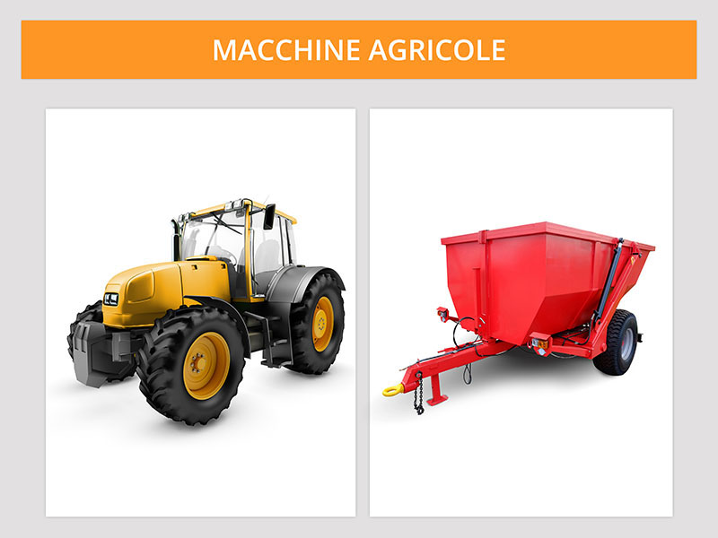

Macchine agricole semoventi e non semoventi

Le macchine agricole sono macchine semoventi (si possono muovere sa sole) o trainate, dotate di ruote gommate o cingoli.
Quelle semoventi possono trasportare al massimo tre addetti, compreso il conducente, ma non in piedi (neanche e soprattutto sul rimorchio).
Le macchine agricole sono destinate ad essere impiegate nelle attività agricole e forestali.
Possono circolare su strada per il proprio trasferimento o per il trasporto di prodotti agricoli, ma solo se immatricolate.
Le macchine agricole anche se eccezionali (cioè quelle che superano i limiti di sagoma e di massa previsti per gli autoveicoli) si possono condurre con la patente B.
Quelle che non superano i limiti di massa e di sagoma dei motoveicoli si possono condurre con le patenti di categoria A1, A2, o A.
Quelle semoventi possono trasportare al massimo tre addetti, compreso il conducente, ma non in piedi (neanche e soprattutto sul rimorchio).
Le macchine agricole sono destinate ad essere impiegate nelle attività agricole e forestali.
Possono circolare su strada per il proprio trasferimento o per il trasporto di prodotti agricoli, ma solo se immatricolate.
Le macchine agricole anche se eccezionali (cioè quelle che superano i limiti di sagoma e di massa previsti per gli autoveicoli) si possono condurre con la patente B.
Quelle che non superano i limiti di massa e di sagoma dei motoveicoli si possono condurre con le patenti di categoria A1, A2, o A.